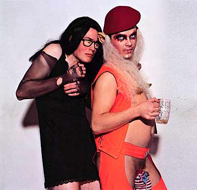
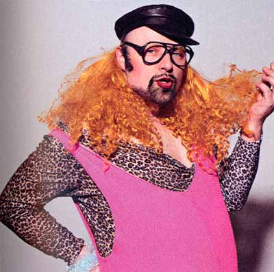
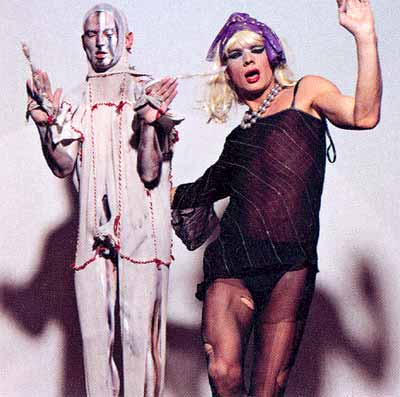
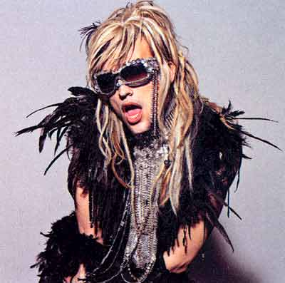

| Nr. 19 - April 2004 |
 dunst |
tåle lugten i bageriet.
dunst både fascinerer og frastøder. Den brogede samling homo-aktivister har igennem de sidste år trukket mange nysgerrige til sig, mens de fleste andre står af, når de ser dem. I øjeblikket arbejder dunst på gruppens første musikalbum, på tv har de chokeret familien Danmark, og de bliver jævnligt booket til performanceshows i hele Europa. Men lige meget hvad du siger, er du nød til at forholde dig til dunst.
For dunst er "provokerende" et kompliment. Deres live-optrædender er et opgør med den typiske forestilling om mandens identitet og position, og deres thrash drag-look er modstand mod det, de betegner som et opkørt og undertrykkende skønhedsideal. Aktivisterne i dunst ser samfundet som småborgerligt, dobbeltmoralsk og oldschool, siger de.
 mAdam og The Thom |
Det sidste, jeg så til mændene i dunst, var i en mørk kælder under en natklub i København. Ikælt et par gamacher, tårnhøje hæle og en citronskive oppe imellem ballerne bukker en aktivist sig forover. Vi er midt i et cirkus, hvor grænser er til for at blive overtrådt. Flere dunst-aktivister rykker rundt på det fyldte dansegulv i noget, der ligner en nonstop-performance, et trafikuheld af individualister som mødes i lige dele anarki, homoseksualitet og kropskunst. De beskriver sig selv som et anarkistisk spektakel, der har til formål at nedbryde de stivnede og gammeldags roller. Roller, der er fantasiløse, og som begrænser kreativitet og selvudvikling. Og ganske rigtigt: "dunst er få og upoleret engergi. Vi er lige dele skabertrang, indignation og nysgerrighed. Vi overskrider konstant vores egne og hinandens grænser i afprøvningen af nye ideer, væremåder og looks," som Miss Fish beskriver det.
Klart. dunst er et opgør. Først og fremmest et opgør mod homomiljøet, København og de værdier, som vi bliver påduttet i Danmark. Alene horden af teenage-popstars og tv-fremstillede berømtheder og den brede offentligheds fascination af hurtig berømmelse og succes gør de cirka 20 dunst-aktivister værd at holde øje med. I en verden af transperente plastik-mennesker er dunst råt, skønt og ægte.
 Ramona Macho |
Vi spoler tiden nogle timer tilbage fra nattens eskapader. Vi er i et studie i det indre København. Rundt om mig vimser en flok mænd. Nogle spørger efter hårlak. Et medlem forklarer engageret om de 20 sæt tøj, som han har med, imens flere og flere aktivister strømmer til.
"Vi kommer alle i homomiljøet, men er i høj grad en protest mod netop dette miljø. Livet handler om andet end at stå på Pan og tjekke hinanden ud," begynder et medlem med en sok på pikken og horn sat fast i panden. "Jeg har boet i en række storbyer tidligere. Da jeg vendte hjem, konstaterede jeg, at København var dræbende kedelig. Her skete jo intet. Jeg husker stadig den aften i et køkken på Vesterbro, hvor vi fandt ud af, at vi havde det sådan alle sammen. Vi besluttede os for, at det skulle der laves om på," fortæller Thom.
 Dennis Agerblad og Stimulundia |
Siden begyndelsen i 2001 er det gået stærkt. Dunst har lige været på tv. I "zulu Bingo" blev Jan Elhøj bragt ud af kurs, da dunst rykkede ind. En af aktivisterne blev skubbet ned i et meterlangt skumgummi-pølsebrød og overhældt med ketchup og ristede løg, andre kastede med flødekarameller, og i det hele taget var der ravage.
Ud over tv-optrædener er det blevet til 12 temafester. Temaerne er gået fra 'Le Freak' til 'Helligånden', og som tiden er gået, har flere og flere københavnere fået smag for dunst aktiviteter. Flere og flere har oplevet, at dunst ikke anerkender grænsen mellem publikum og performer, og som en af dem forklarer det: "dunst er ikke noget, man oplever - man lever det. man lever i et opgør mod de klassiske skønhedsidealer", bliver det sagt.
 Hairwerk |
Den perfekte mand og kvide er med andre ord under angreb, når først dunst rykker ud. Tilbage på dansegulvet bliver citronskiven fisket ud med tænderne af et andet dunst-medlem. En håndfuld thrash drags, hviket er det tætteste, vi kommer på et ord for deres udseende, vrider sig rundt. Tidligere samme aften har to dunst-folk lavet et blowjob ude på gulvet. Jeg spørger en, hvad der skal til, før dunst bliver overflødige? "Der skal rigtig meget til. Hvis vi bliver viklet for langt ind i det mainstreame, er der en fare. Men vi holder meget godt fat i tøjlerne, fornemmer jeg," siger Dennis Agerblad til mig, og mens jeg kigger rundt på dunst-medlemmerne, giver jeg ham ret. Der er et stykke til, at aktivist-avantgardisterne passer ind til kakkelbordene i de danske stuer. De her mænd er ude på narrestreger et godt stykke tid endnu.
dunst er på gaden med house- og amgient-albummet 'munch of us'.
dunst holder fest i Ungdomshuset i København den 10. april.
Tekst: Frederik Bjerregaard.
Foto: Hasse Nielsen
Print denne side